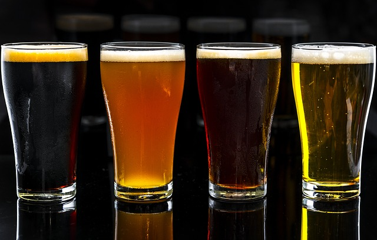

Welcome to my site! It is dedicated to the art and craft of brewing fine beers. I started brewing my own
beer
back about 4 years ago. It all started by purchasing a
Brewing For Dummies book. At first I was overwhelmed by the process which can be
quite complex. Fortunately for beginners there are products and methods out there that are geared for
beginnners. My first brew was a success, I was
determined to learn more and produce even better beers. On my site you find what main indgrients make up a
beer, tools of the trade, my recipes and more. I hope you enjoy the site.
If you have any questions or want to contact me, check out my About Me page. Thanks for stopping by!

With home brewing you can brew almost any type or style of beer.